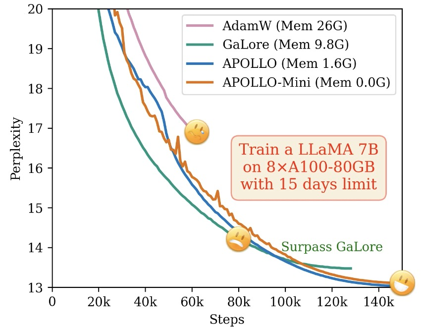
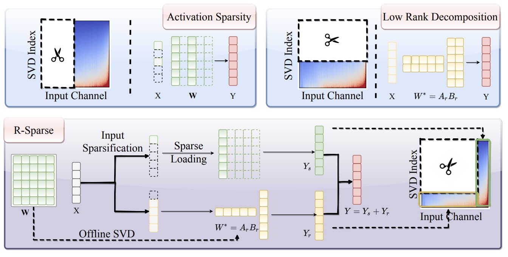
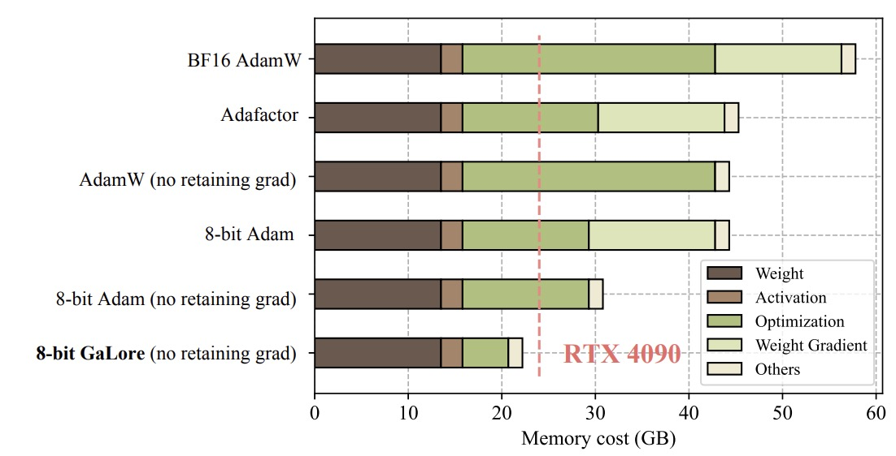
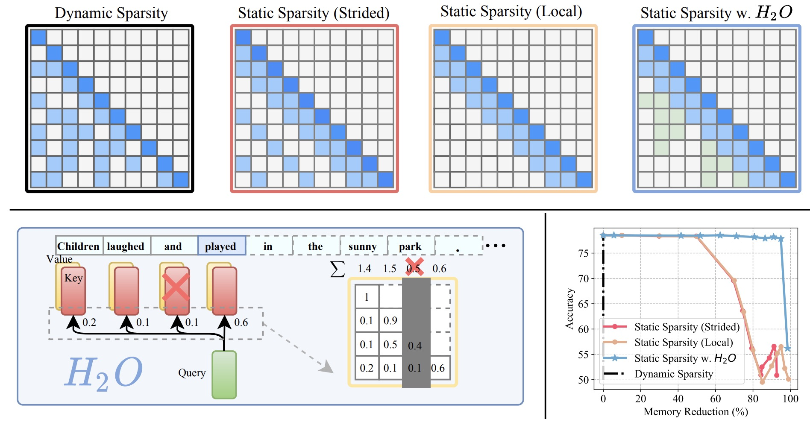
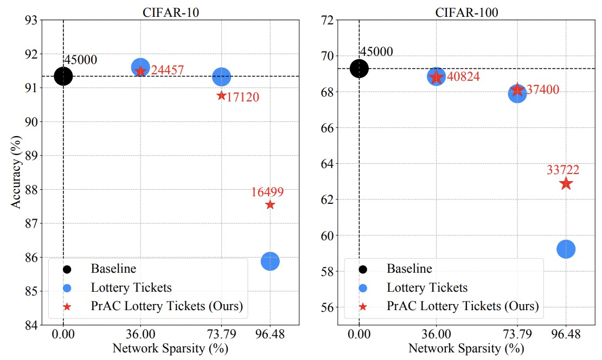
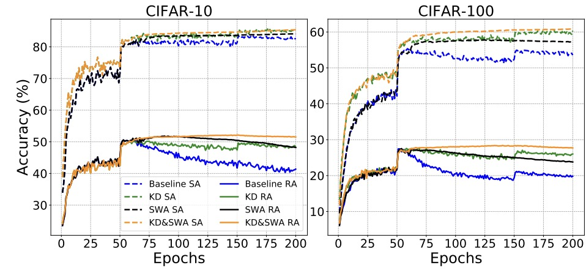
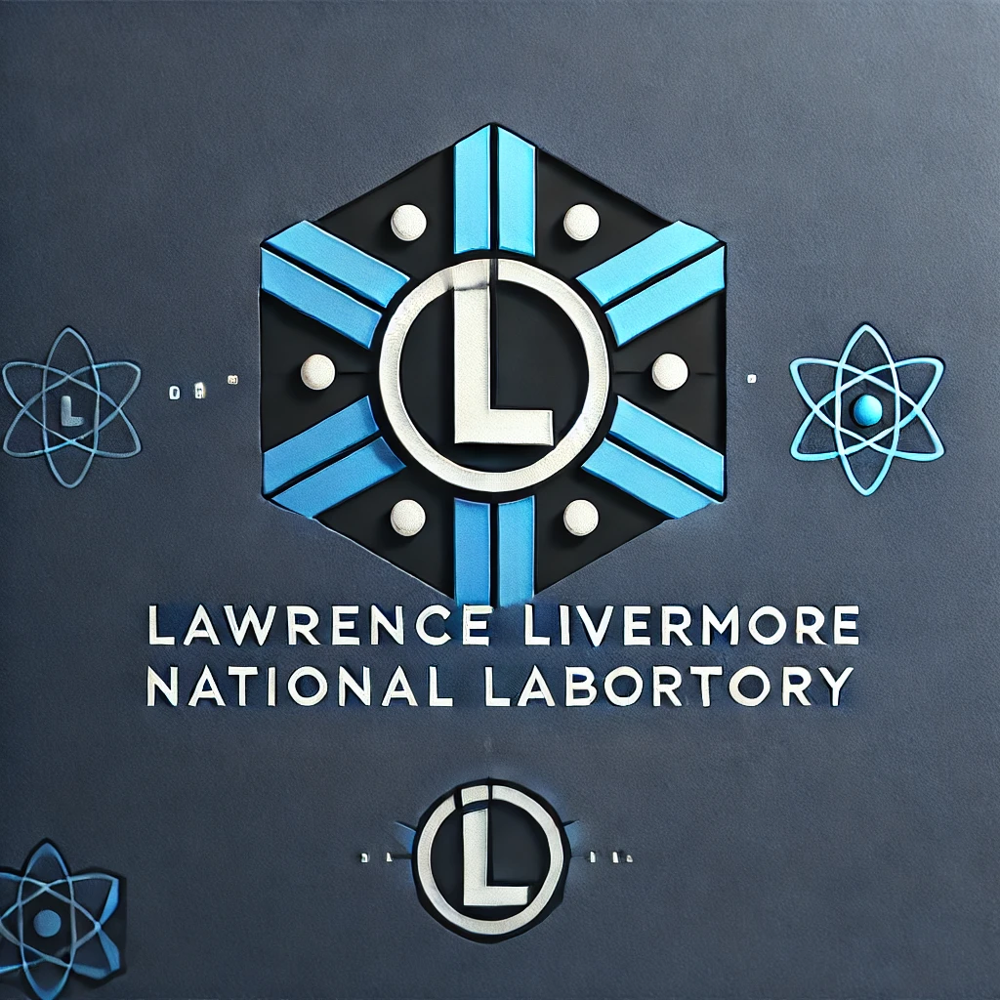

Education
Ph.D. in The University of Texas at Austin
M.E. in University of Science and Technology of China
Sep 2019 - May 2022
M.E. in Electrical and Computer Engineering
Advised by Prof. Bin Li.
B.S. in University of Science and Technology of China
Sep 2015 - May 2019
B.S. in Applied Physics
Yan Ji-Ci Talent Program in Physics
Selected Publication
APOLLO: SGD-like Memory, AdamW-level Performance
Hanqing Zhu*, Zhenyu Zhang*, Wenyan Cong, Xi Liu, Sem Park, Vikas Chandra, Bo Long, David Z. Pan, Zhangyang Wang, Jinwon Lee (* Equal Contribution)
Proceedings of Machine Learning and Systems (MLSys Outstanding Paper Award Honorable Mention), 2025
[Paper] [Project] [Code] [Hacker News] [LLaMA-Factory] [FluxML] [HuggingFace] [Axolotl] [Video] [机器之心]

R-Sparse: Rank-Aware Activation Sparsity for Efficient LLM Inference
Zhenyu Zhang, Zechun Liu, Yuandong Tian, Harshit Khaitan, Zhangyang Wang, Steven Li
International Conference on Learning Representations (ICLR), 2025

GaLore: Memory-Efficient LLM Training by Gradient Low-Rank Projection
Jiawei Zhao, Zhenyu Zhang, Beidi Chen, Zhangyang Wang, Anima Anandkumar, Yuandong Tian
International Conference on Machine Learning (ICML Oral), 2024
[Paper] [Project] [Code] [Hacker News] [HuggingFace] [LLaMA-Factory] [Axolotl] [AICoffeeBreak] [机器之心]

H2O: Heavy-Hitter Oracle for Efficient Generative Inference of Large Language Models
Zhenyu Zhang, Ying Sheng, Tianyi Zhou, Tianlong Chen, Lianmin Zheng, Ruisi Cai, Zhao Song, Yuandong Tian, Christopher Ré, Clark Barrett, Zhangyang Wang, Beidi Chen
Neural Information Processing Systems (NeurIPS), 2023
[Paper] [Project] [Code] [Meta/llama-recipes] [Answer.AI] [Talk] [新智元]

Efficient Lottery Ticket Finding: Less Data is More
Zhenyu Zhang*, Xuxi Chen*, Tianlong Chen*, Zhangyang Wang
(* Equal Contribution)International Conference on Machine Learning (ICML), 2021

Robust Overfitting may be mitigated by properly learned smoothening
Tianlong Chen*, Zhenyu Zhang*, Sijia Liu, Shiyu Chang, Zhangyang Wang (* Equal Contribution)
International Conference on Learning Representations (ICLR), 2021

Work Experience
- Conducted research on building long context foundation models.
- Work with Dr. Souvik Kundu, Dr. Mostafa Hesham.
- Conduct research on efficient LLM inference by activation sparsity.
- Work with Dr. Steven Li, Dr. Zechun Liu, Dr. Yuandong Tian.
- Conduct research on enhancing context awareness of long context LLM.
- Work with Dr. Zhewei Yao, Dr. Xiaoxia Wu.

- Conduct research on KV cache compression for efficient LLM inference.
- Work with Dr. Bhavya Kailkhura, Dr. Brian Bartoldson, Dr. James Diffenderfer.
